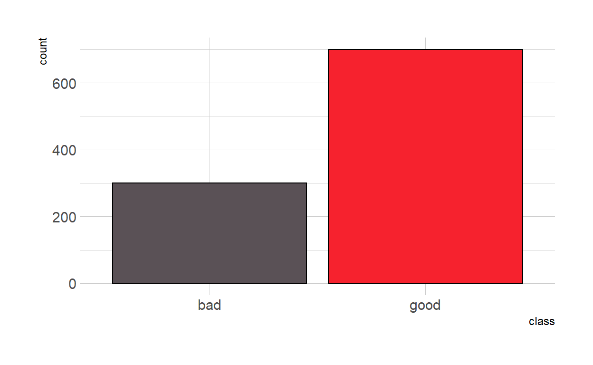
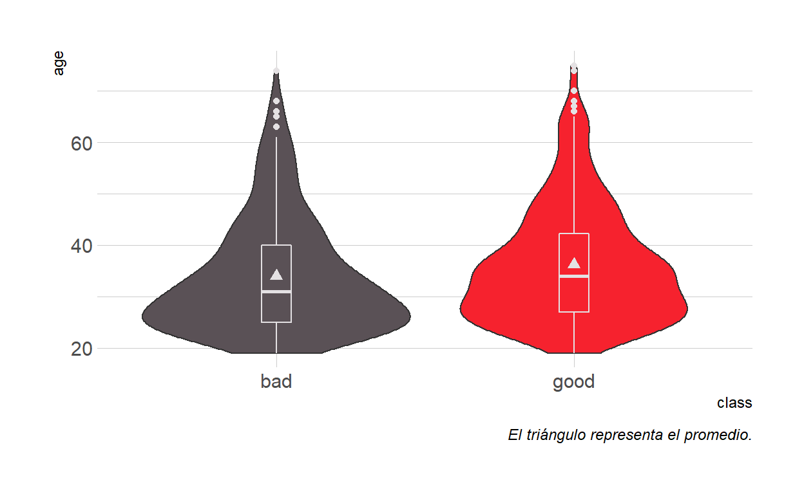
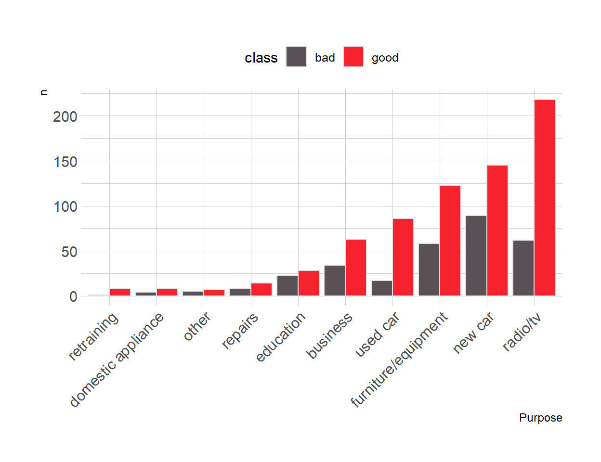
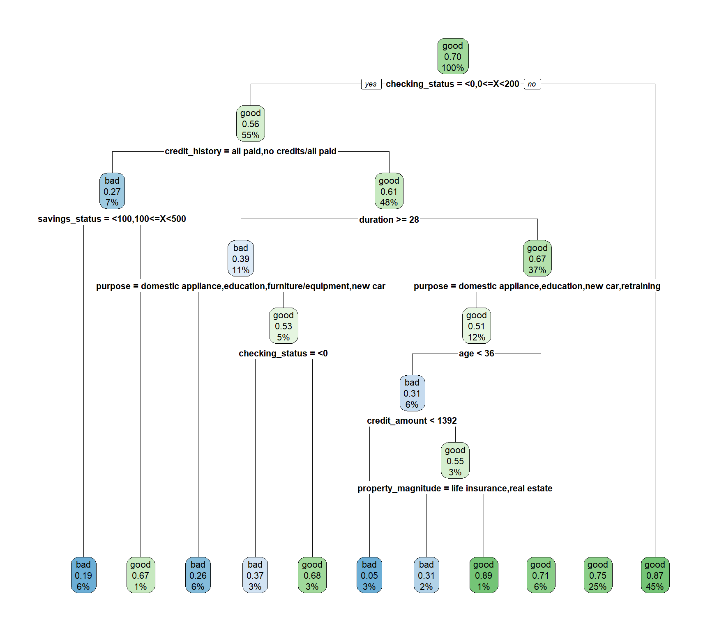
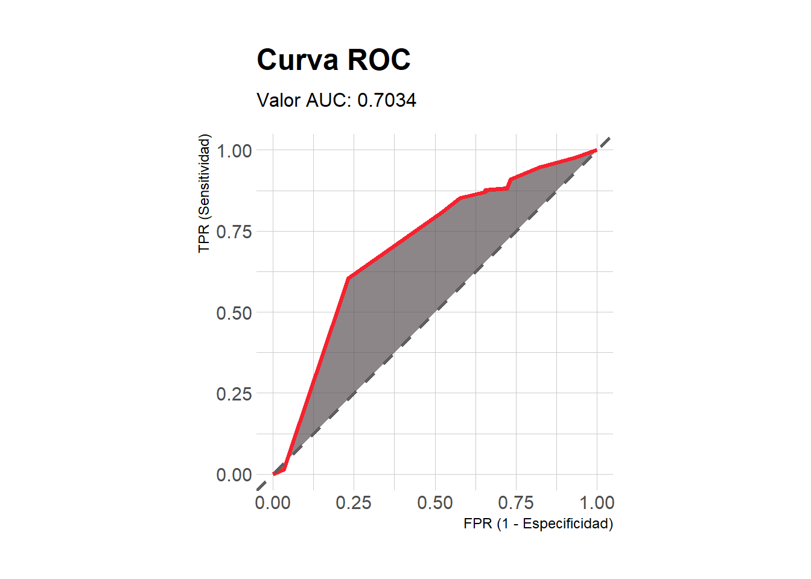
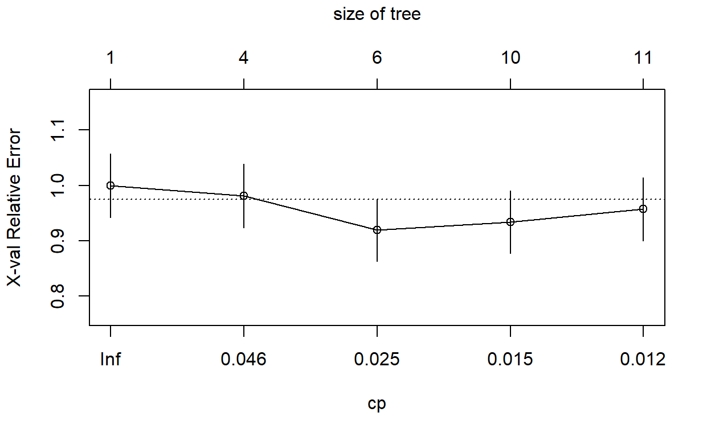
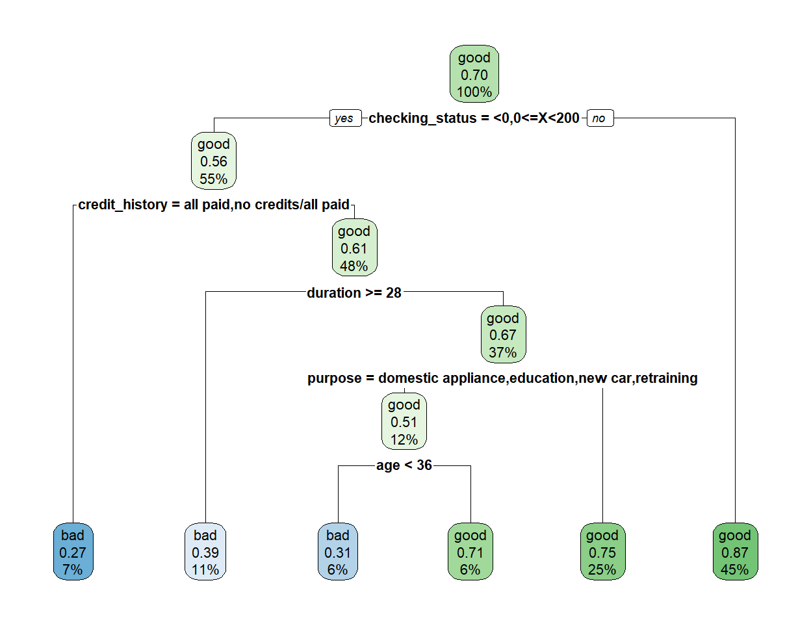
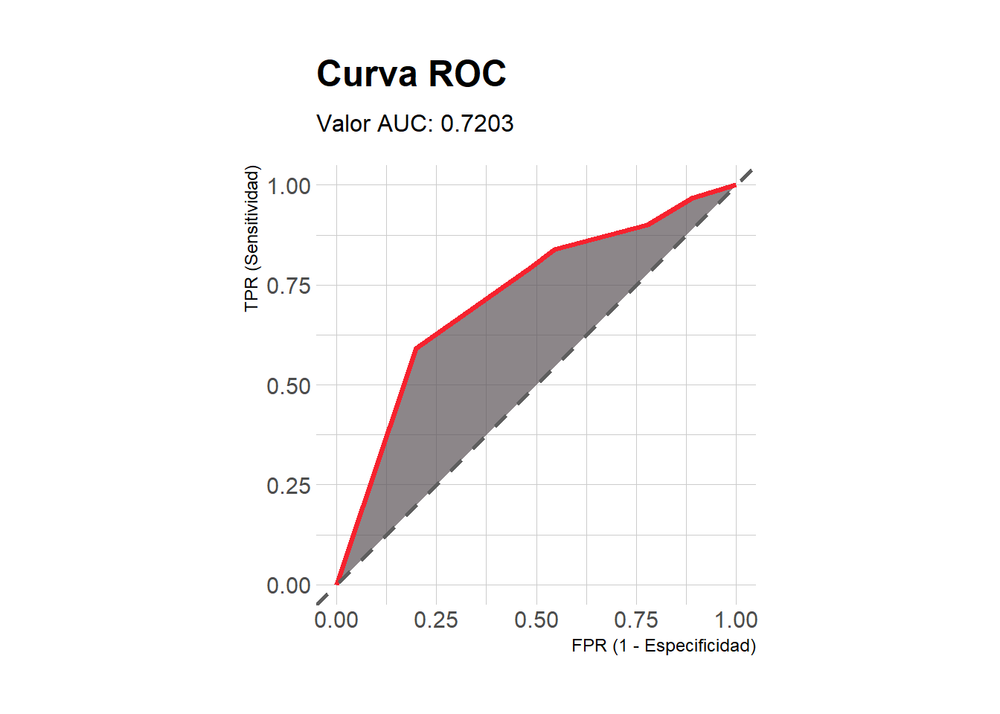
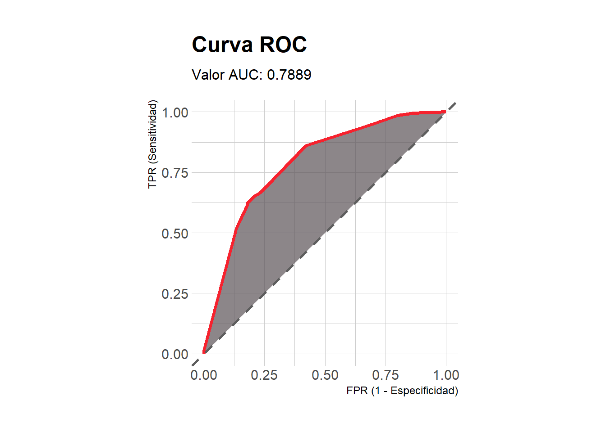
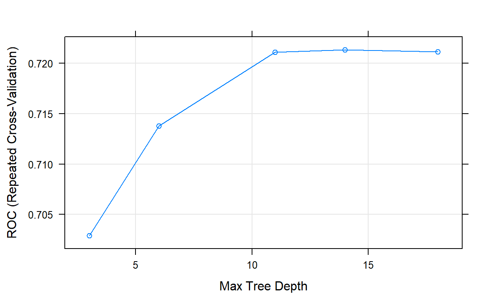

Ejemplo de árboles de decisión en machine learning supervisado para clasificación. Uso de las bibliotecas rpart, rpart.plot y caret en perfilamiento de riesgo crediticio.
1. Información general (requisitos previos, bibliotecas, etc).
2. Análisis inicial de los datos. Como el objetivo principal del documento es entrenar un modelo de árbol de decisión con R, el análisis inicial incluye sólo una parte exploratoria y algunas pruebas estadísticas.
3. Entrenamiento de modelo por defecto con rpart.
4. Ajuste de hiperparámetros con la biblioteca caret. La métrica para evaluar el desempeño predictivo de los modelos es el área bajo la curva ROC.
5. Material complementario.
6. Recursos de información.
rpart y rpart.plot para entrenar y gráficar modelos basados en árboles.caret.ggplot2, jcolors y hrbrthemes, para manejo de datos dplyr y para métricas de error y/o precisión Metrics y pROC.mutate_if() para eliminar las comillas simples (’’) que están presentes en las variables tipo texto (character). A continuación sólo se muestran 5 variables (columnas) con 10 observaciones. La variable class es nuestro target o variable respuesta.data <- data.table::fread(file = "data/dataset_31_credit-g.csv") %>%
mutate_if(is.character, funs(gsub("'", "", .)))
head(data[1:10, c(1, 5, 10, 15, 21)], n = 10L) # Imprimiendo sólo 5 columnas
checking_status credit_amount other_parties housing class
1: <0 1169 none own good
2: 0<=X<200 5951 none own bad
3: no checking 2096 none own good
4: <0 7882 guarantor for free good
5: <0 4870 none for free bad
6: no checking 9055 none for free good
7: no checking 2835 none own good
8: 0<=X<200 6948 none rent good
9: no checking 3059 none own good
10: 0<=X<200 5234 none own baddim(data)
[1] 1000 21data %>%
ggplot(mapping = aes(x = class, fill = class)) +
geom_bar(color = "black") +
scale_fill_manual(values = c("#5A5156", "#F6222E")) +
theme_ipsum() +
theme(legend.position = "none")

data %>%
ggplot(mapping = aes(x = class, y = age, fill = class)) +
geom_violin() +
geom_boxplot(color = "#E4E1E3", width = 0.1, show.legend = FALSE) +
stat_summary(fun.y = mean, color = "#E4E1E3", pch = 17) +
scale_fill_manual(values = c("#5A5156", "#F6222E")) +
theme_ipsum() +
theme(legend.position = "none") +
labs(caption = "El triángulo representa el promedio.")

data %>%
group_by(class, purpose) %>%
count() %>%
ggplot(mapping = aes(x = reorder(purpose, n), y = n, fill = class)) +
geom_col(color = "#E4E1E3", position = "dodge") +
scale_fill_manual(values = c("#5A5156", "#F6222E")) +
labs(x = "Purpose") +
theme_ipsum() +
theme(legend.position = "top",
axis.text.x = element_text(angle = 45, hjust = 1))

Df Sum Sq Mean Sq F value Pr(>F)
class 1 1074 1073.5 8.357 0.00393 **
Residuals 998 128198 128.5
---
Signif. codes: 0 '***' 0.001 '**' 0.01 '*' 0.05 '.' 0.1 ' ' 1NA).rpart() con valores predeterminados puede ser una buena estrategia para iniciar, siempre estaremos interesados en ajustar determinados parámetros que nos permitan obtener mejor rendimiento predictivo. La función rpart.control() permite controlar manualmente otras opciones. Dentro los hiperparámetros más importantes en árboles de decisión están los siguientes:
rpart lleva el nombre de minsplit y su valor por defecto es 20.rpart lleva el nombre de maxdepth y su valor predeterminado es 30. Este parámetro es de alta relevancia para evitar el sobreajuste.rpart lleva el nombre de cp y su valor por defecto es 0.01. Este parámetro sirve al propósito de penalizar y contolar el tamaño del árbol, valores bajos indican árboles de mayor complejidad, es decir, mayor número de divisiones. La función rpart() internamente ejecuta validación cruzada 10 veces para estimar el valor óptimo de cp, es posible acceder a dicho resultado a través de la función plotcp() que permitirá facilmente determinar el valor adecuado para este parámetro. Cuando se tiene el valor óptimo de cp será posible “podar” el árbol para que el modelo sea optimizado, dicho resultado es posible a través de la función prune().sample(), la función createDataPartition() del paquete caret agiliza el procedimiento. Para garantizar replicabilidad en los resultados se agrega la semilla.set.seed(1992)
idx <- createDataPartition(y = data$class, times = 1, p = 0.70, list = FALSE)
dataTrain <- data[idx, ]
dataTest <- data[-idx, ]
rpart defaultmethod = "class" indica que es un problema de clasificación, si fuese un problema de regresión el argumento tomaría el valor de method = "anova", aunque también permite otras opciones (consulte ?rpart o help("rpart")).modArbol0 <- rpart(class ~ ., data = dataTrain, method = "class")
modArbol0
n= 700
node), split, n, loss, yval, (yprob)
* denotes terminal node
1) root 700 210 good (0.3000000 0.7000000)
2) checking_status=<0,0<=X<200 385 168 good (0.4363636 0.5636364)
4) credit_history=all paid,no credits/all paid 51 14 bad (0.7254902 0.2745098)
8) savings_status=<100,100<=X<500 42 8 bad (0.8095238 0.1904762) *
9) savings_status=500<=X<1000,no known savings 9 3 good (0.3333333 0.6666667) *
5) credit_history=critical/other existing credit,delayed previously,existing paid 334 131 good (0.3922156 0.6077844)
10) duration>=27.5 77 30 bad (0.6103896 0.3896104)
20) purpose=domestic appliance,education,furniture/equipment,new car 39 10 bad (0.7435897 0.2564103) *
21) purpose=business,other,radio/tv,repairs,used car 38 18 good (0.4736842 0.5263158)
42) checking_status=<0 19 7 bad (0.6315789 0.3684211) *
43) checking_status=0<=X<200 19 6 good (0.3157895 0.6842105) *
11) duration< 27.5 257 84 good (0.3268482 0.6731518)
22) purpose=domestic appliance,education,new car,retraining 83 41 good (0.4939759 0.5060241)
44) age< 35.5 42 13 bad (0.6904762 0.3095238)
88) credit_amount< 1392 20 1 bad (0.9500000 0.0500000) *
89) credit_amount>=1392 22 10 good (0.4545455 0.5454545)
178) property_magnitude=life insurance,real estate 13 4 bad (0.6923077 0.3076923) *
179) property_magnitude=car,no known property 9 1 good (0.1111111 0.8888889) *
45) age>=35.5 41 12 good (0.2926829 0.7073171) *
23) purpose=business,furniture/equipment,other,radio/tv,repairs,used car 174 43 good (0.2471264 0.7528736) *
3) checking_status=>=200,no checking 315 42 good (0.1333333 0.8666667) *checking_status, que hace referencia al estado de la cuenta corriente. El historial crediticio, la duración del tiempo para pagar el crédito, el estado de la cuenta de ahorros y el propósito del crédito, también son factores determinantes. No tener suficiente capital en cualquiera de las dos cuentas, tener mal historial crediticio y además solicitar períodos de pago de alta duración, pueden ser características no deseables a la hora de solicitar un crédito.rpart.plot(modArbol0)

predichos_mod0 <- predict(object = modArbol0, newdata = dataTest, type = "class")
confusionMatrix(data = predichos_mod0, reference = as.factor(dataTest$class),
positive = "good")
Confusion Matrix and Statistics
Reference
Prediction bad good
bad 31 26
good 59 184
Accuracy : 0.7167
95% CI : (0.662, 0.767)
No Information Rate : 0.7
P-Value [Acc > NIR] : 0.2873596
Kappa : 0.2465
Mcnemar's Test P-Value : 0.0005187
Sensitivity : 0.8762
Specificity : 0.3444
Pos Pred Value : 0.7572
Neg Pred Value : 0.5439
Prevalence : 0.7000
Detection Rate : 0.6133
Detection Prevalence : 0.8100
Balanced Accuracy : 0.6103
'Positive' Class : good
# Probabilidades predichas para la clase "good"
pred0 <- as.data.frame(predict(object = modArbol0,
newdata = dataTest, type = "prob"))$good
# Transformando respuesta a entero. A la clase "good" le agrego 1 y
# a la clase "bad" le agrego 0.
target <- as.integer(as.factor(dataTest$class)) - 1
# AUC
Metrics::auc(actual = target, predicted = pred0)
[1] 0.7034392# Cargando función
source("functions/myROC.R")
# Ver función myROC() al final en material complementario
myROC(predichos = pred0, reales = target)

plotcp(modArbol0)

modArbol0_prune <- prune(tree = modArbol0, cp = 0.025)
modArbol0_prune
n= 700
node), split, n, loss, yval, (yprob)
* denotes terminal node
1) root 700 210 good (0.3000000 0.7000000)
2) checking_status=<0,0<=X<200 385 168 good (0.4363636 0.5636364)
4) credit_history=all paid,no credits/all paid 51 14 bad (0.7254902 0.2745098) *
5) credit_history=critical/other existing credit,delayed previously,existing paid 334 131 good (0.3922156 0.6077844)
10) duration>=27.5 77 30 bad (0.6103896 0.3896104) *
11) duration< 27.5 257 84 good (0.3268482 0.6731518)
22) purpose=domestic appliance,education,new car,retraining 83 41 good (0.4939759 0.5060241)
44) age< 35.5 42 13 bad (0.6904762 0.3095238) *
45) age>=35.5 41 12 good (0.2926829 0.7073171) *
23) purpose=business,furniture/equipment,other,radio/tv,repairs,used car 174 43 good (0.2471264 0.7528736) *
3) checking_status=>=200,no checking 315 42 good (0.1333333 0.8666667) *rpart.plot(modArbol0_prune)

predichos_mod0_prune <- predict(object = modArbol0_prune, newdata = dataTest, type = "class")
confusionMatrix(data = predichos_mod0_prune, reference = as.factor(dataTest$class),
positive = "good")
Confusion Matrix and Statistics
Reference
Prediction bad good
bad 41 34
good 49 176
Accuracy : 0.7233
95% CI : (0.669, 0.7732)
No Information Rate : 0.7
P-Value [Acc > NIR] : 0.2072
Kappa : 0.3083
Mcnemar's Test P-Value : 0.1244
Sensitivity : 0.8381
Specificity : 0.4556
Pos Pred Value : 0.7822
Neg Pred Value : 0.5467
Prevalence : 0.7000
Detection Rate : 0.5867
Detection Prevalence : 0.7500
Balanced Accuracy : 0.6468
'Positive' Class : good
# Probabilidades predichas para la clase "good"
pred0_prune <- as.data.frame(predict(object = modArbol0_prune,
newdata = dataTest, type = "prob"))$good
# AUC
Metrics::auc(actual = target, predicted = pred0_prune)
[1] 0.7203175# Ver función myROC() al final en material complementario
myROC(predichos = pred0_prune, reales = target)

caret proporciona un marco de trabajo unificado para entrenar y validar modelos de machine learning. En este caso, con caret podremos ajustar dos de los tres hiperparámetros mencionados anteriormente, el parámetro de complejidad y la profundidad del árbol. Las funciones trainControl() y train de la biblioteca caret facilitan el proceso.
trainControl(): permite establecer la estrategia de validación, por ejemplo validación cruzada k-fold, validación cruzada repetida, bootstrapping, entre otras. Desde esta misma función también es posible determinar el método de búsqueda de hiperparámetros, que puede ser aleatoria o cuadrícula (grid). En este caso particular utilizo validación cruzada con repeticiones, con k = 5 y 3 repeticiones. El argumento summaryFunction = twoClassSummary permite computar las métricas necesarias (sensitividad y especificidad) para obtener ROC. Busque más ayuda con help("trainControl").train(): ajuste el modelo estableciendo la fórmula habitual en R, el método o algoritmo para entrenar, (lista de algoritmos en caret) los datos, la configuración para el entrenamiento (tcConrol = myControl) y la longitud de hiperparámetros a considerar en el entrenamiento (tuneLenth). Este último argumento dependerá de los hiperparámetros que estén disponibles en caret, aunque también es posible asignarlos manualmente a través de expand.grid(). Utilizar el método igualado a “rpart” permitirá optimizar el parámetro cp y utilizando “rpart2” es posible optimizar la máxima profundidad del árbol. Cuando se declara tuneLength = 5 se informa que el número máximo de profundidades a probar será 5, es decir, que al final existirán 5 resultados diferentes con el mismo algoritmo. Por último, se agrega la métrica que será utilizada para comparar los resultados de la validación cruzada.myControl <- trainControl(method = "repeatedcv",
number = 5,
repeats = 3,
classProbs = TRUE, # Permite predecir probabilidades
summaryFunction = twoClassSummary)
set.seed(1992)
modArbol_tune <- train(class ~ .,
method = "rpart2",
data = data,
trControl = myControl,
tuneLength = 5,
metric = "ROC")
modArbol_tune
CART
1000 samples
20 predictor
2 classes: 'bad', 'good'
No pre-processing
Resampling: Cross-Validated (5 fold, repeated 3 times)
Summary of sample sizes: 800, 800, 800, 800, 800, 800, ...
Resampling results across tuning parameters:
maxdepth ROC Sens Spec
3 0.7028968 0.3011111 0.8885714
6 0.7138095 0.3244444 0.8880952
11 0.7211151 0.3988889 0.8642857
14 0.7213571 0.4055556 0.8623810
18 0.7211746 0.3911111 0.8671429
ROC was used to select the optimal model using the largest value.
The final value used for the model was maxdepth = 14.predichos_tune <- predict(object = modArbol_tune, newdata = dataTest, type = "raw")
confusionMatrix(data = predichos_tune, reference = as.factor(dataTest$class),
positive = "good")
Confusion Matrix and Statistics
Reference
Prediction bad good
bad 52 29
good 38 181
Accuracy : 0.7767
95% CI : (0.7253, 0.8225)
No Information Rate : 0.7
P-Value [Acc > NIR] : 0.001839
Kappa : 0.4526
Mcnemar's Test P-Value : 0.328393
Sensitivity : 0.8619
Specificity : 0.5778
Pos Pred Value : 0.8265
Neg Pred Value : 0.6420
Prevalence : 0.7000
Detection Rate : 0.6033
Detection Prevalence : 0.7300
Balanced Accuracy : 0.7198
'Positive' Class : good
# Probabilidades predichas para la clase "good"
pred_tune <- as.data.frame(predict(object = modArbol_tune,
newdata = dataTest, type = "prob"))$good
# AUC
Metrics::auc(actual = target, predicted = pred_tune)
[1] 0.7888624# Ver función myROC() al final en material complementario
myROC(predichos = pred_tune, reales = target)

plot + caretplot() tiene un método específico para resultados obtenidos a través de caret, en este caso muestra el gráfico del hiperparámetro de interés, la máxima profundidad del árbol vs la curva ROC en el eje Y, tratando de evidenicar el valor óptimo.plot(modArbol_tune)

visNetworkvisNetwork permite crear gráficos interactivos para objetos de la clase rpart. A manera de ejemplo se presenta el gráfico para el árbol de decisión con poda. Recuerde que es interactivo y puede manipularlo con el mouse.library(visNetwork)
visTree(modArbol0_prune,
main = "Árbol con poda", width = "100%",
height = "800px", edgesFontSize = 14, nodesFontSize = 16,)
myROC()dplyr, ggplot2, hrbrthemes, Metrics y pROC para ejecutar la función.myROC <- function(predichos, reales) {
suppressMessages(suppressWarnings(library(dplyr)))
suppressMessages(suppressWarnings(library(ggplot2)))
suppressMessages(suppressWarnings(library(pROC)))
suppressMessages(suppressWarnings(library(Metrics)))
x = roc(reales, predichos)
df = data_frame(TPR = x$sensitivities,
FPR = 1 - x$specificities)
gg = df %>%
ggplot(aes(x = FPR, ymin = 0, ymax = TPR)) +
geom_polygon(aes(y = TPR), fill = "#5A5156", alpha = 0.7) +
geom_path(aes(y = TPR), col = "#F6222E", size = 1.3) +
geom_abline(
intercept = 0,
slope = 1,
color = "gray37",
size = 1,
linetype = "dashed"
) +
theme_ipsum() +
coord_equal() +
labs(
x = "FPR (1 - Especificidad)",
y = "TPR (Sensitividad)",
title = paste0("Curva ROC"),
subtitle = paste0(
"Valor AUC: ",
Metrics::auc(actual = reales,
predicted = predichos) %>% round(4)
)
)
return(gg)
}